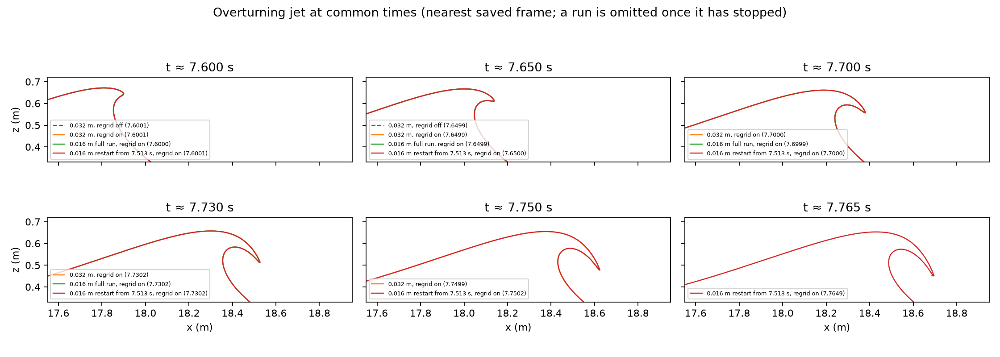
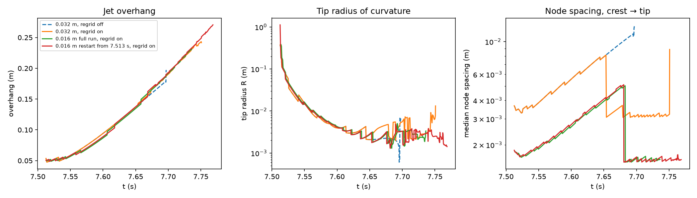
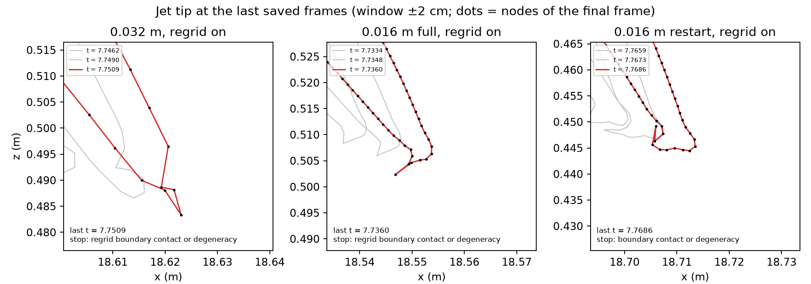
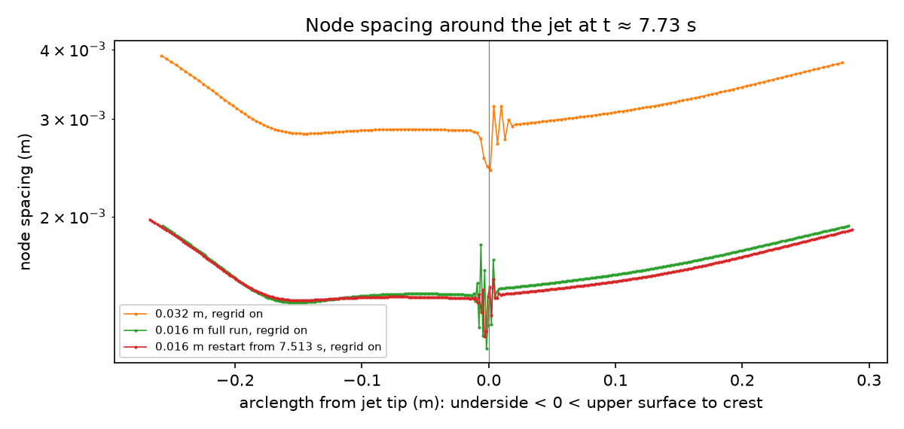

Surftank BEM · a0 = 0.5, 1:35 slope, CFL 0.2 · 24 November 2026
Doubling resolution converges the jet, but not its tip
The 0.064 / 0.032 m runs all failed at the jet tip before touchdown. This page adds two runs at a free-surface resolution of 0.016 m, both with regridding. The first is a full run from t = 0. The second is a restart of the 0.032 m regridded run at the moment its front face first becomes vertical (t = 7.5126 s). The restart doubles the free-surface nodes by spline interpolation and keeps the bottom at 0.032 m spacing.
Two-dimensional potential-flow BEM. All runs ran on Unity with 32 OpenMP threads. Regridding (shift_by_curve2d_normu, a = 16, thresholds 10 / 1.5) and wall respacing are as before. A restart without refinement reproduces the original run to about 10−13. A full 0.016 m run without regridding is still running and is not shown.
Short answer
- The jet itself is converged through t ≈ 7.73 s. At 7.70 and 7.73 s, the 0.032 m, full 0.016 m and restarted runs agree on the tip position to about 2 mm horizontally and 5 mm vertically, and on the overhang to 3 mm.
- The restart works and is cheaper. It has 5,304 unknowns against 6,678 for the full 0.016 m run, and it skips 7.5 s of shoaling. It tracks the full run to within millimetres, ran in 3.7 h against 6.5 h, and reached a later time.
- The tip is converged only down to a radius of about 4 mm. Until t ≈ 7.62 s the tip radius of curvature shrinks identically at every resolution. After that it fluctuates between about 1 and 5 mm, which is one to two node spacings in each run. In other words, it is set by the grid, not resolved.
- Doubling resolution does not move the failure. The runs stop at t = 7.751 s (0.032 m), 7.736 s (full 0.016 m) and 7.769 s (restart). In every case adjacent panels within a few nodes of the tip fold by 170–180°.
- The regridder does not target the tip. Weighting by |∇φ| spaces the whole jet almost uniformly, at about 1.4 mm in the 0.016 m runs. The tip gets no extra nodes, and within a few nodes of it the spacing oscillates. Resolving the tip needs variable gridding there: spacing set by the local radius of curvature rather than by flow speed.
Runs
| Run | Unknowns | Last t (s) | Regrids | Overhang (m) | Tip R (mm) | Jet spacing (mm) | Wall time |
|---|---|---|---|---|---|---|---|
| 0.032 m, regrid off | 3343 | 7.697 | 0 | 0.197 | 6.7 | 13.0 | 52 min |
| 0.032 m, regrid on | 3343 | 7.751 | 18 | 0.242 | 13.2 | 8.9 | 44 min |
| 0.016 m full run, regrid on | 6678 | 7.736 | 17 | 0.231 | 3.4 | 1.6 | 6.5 h |
| 0.016 m restart from 7.513 s, regrid on | 5304 | 7.769 | 47 | 0.271 | 1.4 | 1.6 | 3.7 h |
All four runs use CFL 0.2. The 0.032 m runs used 16 threads and the 0.016 m runs 32, on different Unity node types, so wall times are indicative only. Last-frame tip radii come from a crumpled tip and are noisy; the time series below is more informative.
The jet at matching times


At the tip


Next: variable gridding at the tip
The tip needs a node spacing that follows its radius of curvature, for example ds ≲ R / 10, so roughly 0.3–0.5 mm when R ≈ 4 mm. Elsewhere the jet is already converged at its present spacing. Uniform refinement to that spacing would be prohibitively expensive with a dense BEM. The plan is curvature-dependent node spacing near the tip, with nodes added there rather than drawn from the rest of the surface. It will be tested as a restart from the converged state at t ≈ 7.62–7.70 s.
Method
The restart reads the 0.032 m regridded run's saved state at the first frame where a front-face segment reaches vertical (steepest angle 90.01°; that run had not yet regridded). It inserts one node per free-surface segment using the regridder's index-parameterised cubic splines for x, z and φ, keeping the original nodes exactly. The walls are respaced to the new free-surface endpoints, and the simulation clock continues from t = 7.5126 s. See the a0 = 0.6 page for the solver and regridding details.
Scripts: make_restart.py, compare_refinement.py, tip_closeup.py · numbers: refinement.json. Raw surface histories stay on Unity.